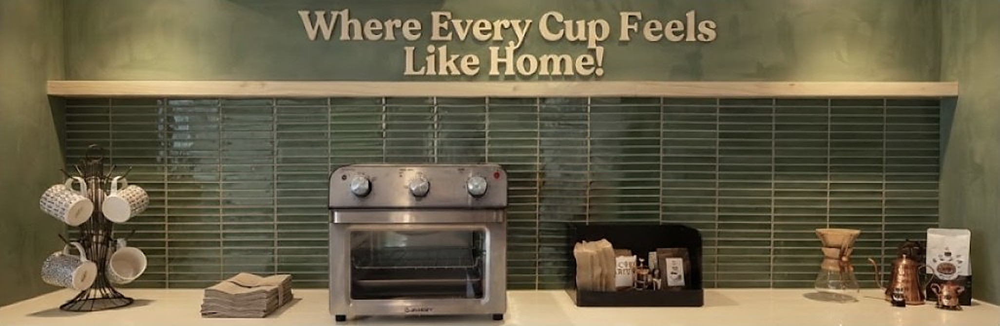

Brew It Coffee, “Where Every Cup Feels Like Home!”, is a cozy coffee shop located at Brgy. Calibutbut, Xevera Plaza, Bacolor, Pampanga. We offer delicious coffee, refreshing beverages, and a welcoming space where everyone can relax and feel at home. Whether you’re starting your day with a freshly brewed cup of coffee, taking a break, studying, working, or catching up with friends, Brew It Coffee is here to make every moment a little more special.
At Brew It Coffee, we believe that every visit is an opportunity to slow down, connect, and appreciate the simple moments. From the comforting aroma of freshly brewed coffee to our warm and relaxing atmosphere, we strive to create a space where you can feel comfortable, welcomed, and at home. Come visit us, enjoy your favorite drink, and let Brew It Coffee make your coffee moments warm, meaningful, and memorable.
Visit us at our FB Page!
https://www.facebook.com/profile.php?id=61581979133616Brew it Coffee Business Hours:
Monday to Sunday (1:00 PM - 10:00 PM)